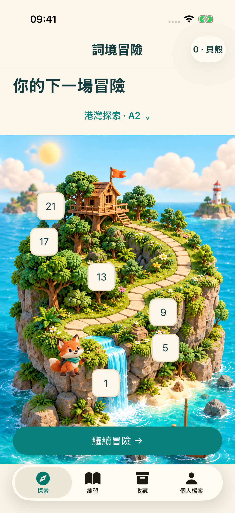
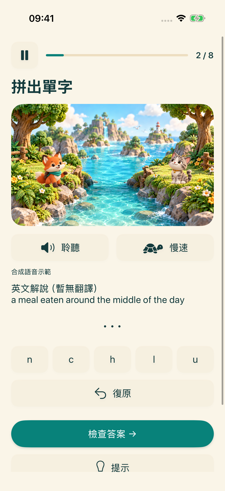
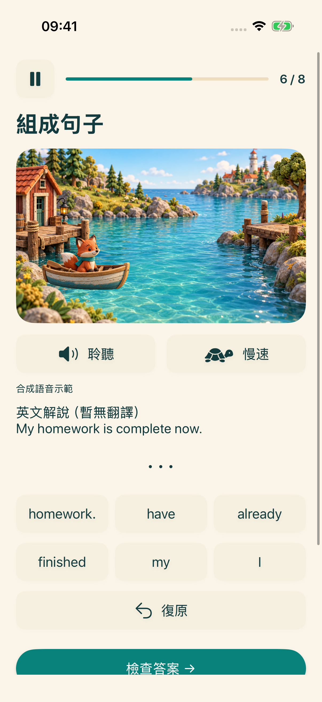
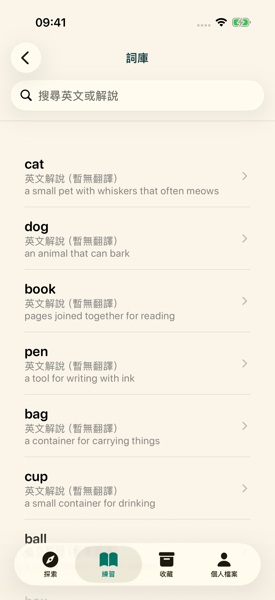

下一座島嶼正等著你
選擇學習階段，沿著路線完成簡短的英語練習。


選擇學習階段，沿著路線完成簡短的英語練習。

聆聽系統語音，排列字母，練習英文拼字。

將單字依序排列，探索英文句子的組合方式。

探索單字庫、收藏喜愛的單字，隨時複習學過的內容。

錄下聲音、回放聆聽，再試一次。支援的裝置可選擇使用裝置端語音轉寫。這是開口練習，不提供發音評分。
介面支援 16 種語言。學習解說提供英文與簡體中文；其他語言如無對應翻譯，會顯示明確標示的英文解說。
學習內容和進度儲存在你的裝置上。無須帳號，也無須使用開發者營運的雲端同步。語音資源取決於裝置；廣告與隱私權服務需要網路連線。
未滿 18 歲或未設定年齡層的個人檔案不會啟動廣告流程。成年人的廣告顯示取決於隱私權選擇和供應情況。觀看獎勵廣告完全自願。